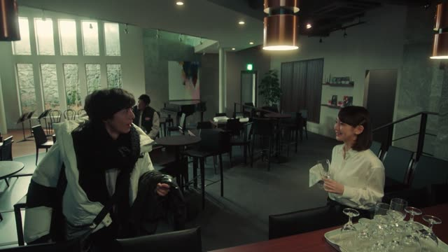

い-Adjective (Past)
| Polite | ～かったです |
|---|---|
| Casual | ～かった drop the い, add かった |
Same meaning: "was". Only the politeness changes.

Midnight Diner
こないだ教えていただいた寿司屋ホントうまかったです。
"That sushi place you told me about the other day was really good."
To say how something was, swap the last い of an い-adjective for かった: うまい (tasty) → うまかった (was tasty).
On this card, someone thanks the person who recommended a sushi place: it was really good. です after かった makes it polite.
Never うまいでした: the past is already in かった. Watch out: いい becomes 良かった, never いかった.

Shirokuma Cafe · Episode 14
楽しかったね。
"[Today at the beach] was fun, huh."
On this card, friends look back on a day at the sea that's just over: 楽しい → 楽しかった. ね is "huh", checking the other person feels the same.
Quick Examples
A friend asks how your trip to Hokkaido was.
寒かった！
"It was cold!"
CasualYou leave a ramen place, still full.
おいしかったね。
"That was good, huh."
CasualA colleague asks about the movie you saw at the weekend.
面白かったです。
"It was interesting."
For polite, just put です after かった. Not 面白いでした.
PoliteA friend asks how the concert was.
よかったよ。
"It was good."
いい is the odd one. It turns into よかった, never いかった.
CasualWith and without
寒い。
"It's cold." You're standing in it right now.
寒かった。
"It was cold." You're home now, telling the story.
寒かったです。
かった does the past, です just adds politeness.
寒いでした。
Feels logical, sounds wrong. です never carries the past here.
Examples from Media

Quartet · Episode 2
うれしかったです。
"I was happy."
うれしい → うれしかった → うれしかったです.

Kekkon Dekinai Otoko · Episode 2
いや いや いや 危なかったですね
"Whoa, whoa, that was a close one."
危ない (dangerous) drops い and adds かった, then です for politeness.
Demon Slayer · Season 1, Episode 8
おいしかったです
"That was delicious."
Said right after finishing a meal. おいしい drops い and adds かった, and です makes it polite.

Good Morning Call · Episode 16
忙しかった？
"Were you busy?"
忙しい becomes 忙しかった. For a casual question, just raise your voice at the end.

1 Litre of Tears · Episode 7
すごいうれしかった。
"I was so happy."
うれしい becomes うれしかった. She is remembering a moment that's over.

Kotaro Lives Alone · Episode 4
それはもうひどかった
"It was just awful."
ひどい (awful) becomes ひどかった. This is someone's first impression of a person, looking back.

Japan Sinks: 2020 · Season 1, Episode 1
俺 ちょっと怖かったけどなあ
"I was kinda scared, though."
怖い becomes 怖かった. He's looking back at a moment that's over. The けどなあ at the end is just "though..." trailing off.
Dungeon Meshi · Episode 12
ならよかった。
"Then I'm glad."
いい → よかった: いい takes its past from 良い.
Further Reading
A Dictionary of Basic Japanese Grammar
Appendix 1, Basic Conjugations · pp. 580–581
Tae Kim's Guide to Japanese Grammar
Adjectives · The i-adjective
Polite Form and Verb Stems · Using 「です」 for everything else